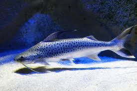

人気の魚

最近の投稿
＃タグから探す
淡水魚
ポリプテルス
アロワナ
プレコ
パクー
カラシン(テトラなど)
プラティ・メダカなど
ローチ
エンゼルフィッシュ
ディスカス
シクリッド
コリドラス
キクラ
エイ
ベタ
ナマズ
フグ
エビ・貝・カニ
汽水魚
その他熱帯魚
金魚
鯉
その他淡水魚
海水魚
ヤッコ
チョウチョウウオ
ハギ
スズメダイ
クマノミ
アジ
タイ
カレイ・ヒラメ
ベラ
ハゼ
ギンポ
ハタ
カサゴ
フグ
カワハギ
エイ・サメ
タコ・イカ
ウニ・ナマコ
クラゲ
エビ・貝・カニ（海）
その他海水魚
魚の特徴
混泳が得意な魚
泳ぎが得意な魚
単独飼育推奨
小型魚
中型魚
大型魚
回遊魚・青魚
底もの
観賞魚
卵
幼魚
肉食魚
長細い魚
古代魚